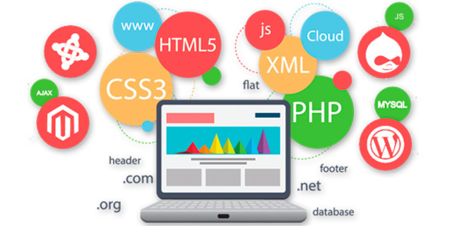
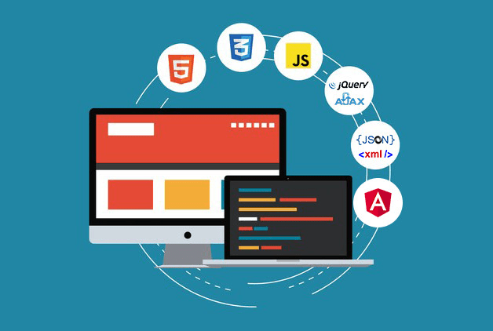

Tecnologico de estudios superiores de huixquilucan
Programación web
Octavo semestre
ISC
Docente:Lic. Hugo de Montes de Oca Martinez
Alumno:Jose Daniel Ramirez Hinojosa
8vo semestre
Grupo: 801
- 1.1 Evolución de las aplicaciones web.
- 1.2 Arquitectura de las aplicaciones web.
- 1.3 Tecnologías para el desarrollo de aplicaciones web.
- 1.4 Planificación de aplicaciones web.


- 2.1 Introducción.
- 2.2 Estructura global de un documento Web.
- 2.3 Elementos básicos: texto, vínculos, listas, tablas, objetos, imágenes y aplicaciones.
- 2.4 Formularios
- 2.5 Lenguajes de presentación en documentos Web.
- 2.6 Selectores.
- 2.7 Modelo de caja.
- 3.1 Introducción al lenguaje.
- 3.2 Manejo de Frameworks
- 3.3 Estructuras de Control.
- 3.4 Manipulación de objetos.

- 4.1 Introducción al lenguaje.
- 4.2 Estructuras de Control.
- 4.3 Tratamiento de Formularios.
- 4.4 Manejo de objetos del servidor
- 4.5 Creación de clases.
- 4.6 Acceso a datos.
- 5.1 Conceptos generales.
- 5.2 Tipos de Servicios en la nube.
- 5.3 Patrones de diseño.
- 5.4 Estándares en servicios.
- 5.5 Plataformas tecnológicas
- 5.6 Seguridad e interoperabilidad.